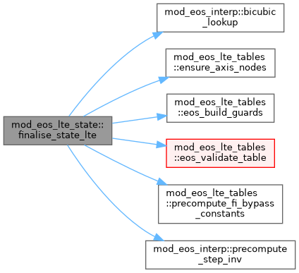
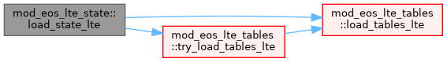

|
MPI-AMRVAC 3.2
The MPI - Adaptive Mesh Refinement - Versatile Advection Code (development version)
|
'state' method (eos_method='state', legacy 'tables') of the LTE EoS family. More...
Functions/Subroutines | |
| subroutine, public | load_state_lte () |
| state arms of the eos_init / eos_finalise dispatchers (mod_eos_LTE) | |
| subroutine, public | finalise_state_lte () |
| Table-based method finalise: shift the loaded T/neOnH (and ionE-derived) tables to code units, build the derived tables not present on disk, then precompute step/guard arrays and validate. shift_table_to_code: axis2='eint' uses the log(p/nH) axis-2 unit, value_shift subtracted from table VALUES (T stores log T -> shift by log(unit_temperature); neOnH dimensionless -> 0); it also ensures node arrays exist so the build_*_table routines see a single var{1,2}_nodes path. Called from eos_finalise_LTE for eos_method='tables'. | |
'state' method (eos_method='state', legacy 'tables') of the LTE EoS family.
The direct per-quantity tabulation of the Saha ionisation-equilibrium state: loads the T/neOnH (and ionE p2eint) tables, shifts them to code units, and builds the derived tables the runtime needs (gamma1, log_p, p_over_nH, the interleaved fast-path block, the pressure-indexed gamma1, and the bisected p2eint / eint-from-T inverses). The shared binary-file I/O, axis/guard/validate machinery and the FI-bypass constants live in mod_eos_LTE_tables (used by all LTE methods); this module owns only the state-method build + finalise. Runs once, during eos_init_LTE / eos_finalise_LTE.
| subroutine, public mod_eos_lte_state::finalise_state_lte |
Table-based method finalise: shift the loaded T/neOnH (and ionE-derived) tables to code units, build the derived tables not present on disk, then precompute step/guard arrays and validate. shift_table_to_code: axis2='eint' uses the log(p/nH) axis-2 unit, value_shift subtracted from table VALUES (T stores log T -> shift by log(unit_temperature); neOnH dimensionless -> 0); it also ensures node arrays exist so the build_*_table routines see a single var{1,2}_nodes path. Called from eos_finalise_LTE for eos_method='tables'.
Build derived tables from loaded T and neOnH. For any table that has a loaded version on disk (uniform or adaptive), KEEP the loaded one – this enables the hybrid mode (T+neOnH uniform for the interleaved fast path; gamma1/p2eint/eint_from_T adaptive for the gamma_1 peak / tighter closure). Loaded versions came from the same Saha solver as T/neOnH so they are physically consistent. Skipping rebuild also avoids the one-time runtime cost but sacrifices accuracy
gamma1 on (log_nH, log_eint/nH) CGS log10; axes -> code units, dimensionless values (no value shift).
Order matters: build_gamma1_p_table reads eosp2eintvar*_nodes, so p2eint must be allocated first (loaded from disk above, or built here for the entropy-sourced case).
eint_from_T on (log_nH, log_T) CGS log10, values log10(eint/nH) CGS. axis2='T'; value shift log(p/nH).
Crucial to not end up with interpolation drift...
Definition at line 49 of file mod_eos_LTE_state.t.

| subroutine, public mod_eos_lte_state::load_state_lte |
state arms of the eos_init / eos_finalise dispatchers (mod_eos_LTE)
'tables' method load: T + neOnH, plus the ionE inverse/derived tables (p2eint loaded; gamma1 / eint_from_T loaded if available, else built later). Called from eos_init_LTE for eos_method='tables'.
Definition at line 32 of file mod_eos_LTE_state.t.
